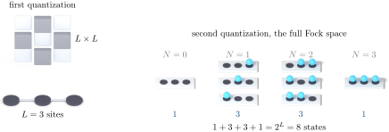
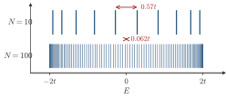

Advanced Quantum Materials 2027 · All lectures · Lecture notes
Session 1. Second Quantization, Mean-Field, and Spontaneous Symmetry Breaking
1.8 First versus second quantization for the same problem
For a tight-binding Hamiltonian that is purely single-particle, first and second quantization need in practice the same amount of work. Let us write the first-quantized Hamiltonian with hopping matrix elements \(t_{ij}\) between orbitals \(i,j\). The second-quantized version has the same \(t_{ij}\), multiplied by \(c_i^\dagger c_j\). To diagonalize either of them we use the same unitary transformation \(U\), and we obtain the same eigenvalues. The only formal difference is that in first quantization the coefficients that diagonalize the Hamiltonian form a vector, while in second quantization they become operators. The physics is the same in both cases.
1.9 Where the two formalisms differ and the exponential growth of the many-body problem
The difference between the two languages appears as soon as we add real many-body interactions, and it grows very fast. Let us take only three sites, with a generic quartic interaction term, which has four operators, added to the kinetic Hamiltonian. We can no longer restrict ourselves to single-particle states, and we need the full Fock space. This contains the empty state, three states with one electron, three states with two electrons and one state with all three sites occupied, which gives a total of \(2^3 = 8\) many-body states. Figure 1.1 shows the two sides of this comparison explicitly.

In general, for \(L\) sites the single-particle problem is an \(L \times L\) matrix, while the many-body problem is a \(2^L \times 2^L\) matrix, and we need \(2^L\) coefficients only to write the ground-state wave function. This is the reason why \(L \approx 20\) is already close to the practical limit of what we can do by brute force. The exact rate of growth depends on the kind of site that we have. Spinful fermions have four states per site, which are empty, up, down and doubly occupied. Spinless fermions have two, and they are relevant when a single spin species is isolated by strong magnetism or a strong field. Pure spin sites, which we will need later in the course for quantum magnets and Kondo systems, also give an exponential growth, but with a different underlying algebra.
We take three sites of spinful fermions, with four states per site. How many many-body states does the Fock space have?
Show the answers
- A. ✗ False
This is false. Adding \(4+4+4\) is wrong, since the states of the sites combine independently. For two sites we already have \(4\times 4=16\) states, which are all the pairs of site states.
- B. ✓ True
This is true. Each site has four states, which are empty, up, down and doubly occupied. Three sites give \(4^3=64\) states, while the single-particle matrix is only \(6\times 6\).
- C. ✗ False
This is false. The number \(6\) is the count of single-particle levels. The many-body states are the ways to fill them, and \(\sum_N\binom{6}{N}=2^6=64\).
The Fock space grows exponentially with the number of sites, while the single-particle matrix grows linearly.
1.10 A first look at eigenstates in finite tight-binding islands
Before we go to interactions, let us look at what a purely single-particle Hamiltonian already gives us, because this is something that we can compare directly with experiment. Let us take a tight-binding Hamiltonian \(H = \sum_{ij} t_{ij}\, c_i^\dagger c_j\) on a honeycomb lattice, cut into a finite island that is triangular, hexagonal or rectangular, and let us diagonalize it. The probability density of a given eigenvector in real space can be compared directly with what a scanning tunneling microscope measures. Qualitatively, these states look like the finite-size states of a “particle in a box”. The lowest-energy state has its maximum close to the center of the island, and the higher states have more and more nodes. This is a good first check, since single-particle diagonalization, with nothing more, already gives a structure that we can recognize and that we can measure in experiments.
We make a finite island larger and diagonalize it again. What happens to the spacing between the levels?
Show the answers
- A. ✗ False
This is false. For a chain with \(N\) sites, the levels are \(-2t\cos(n\pi/(N+1))\). The spacing at the center is \(0.57t\) for \(N=10\) and \(0.062t\) for \(N=100\), so it is smaller for the larger island.

The levels of an open chain for \(N=10\) and \(N=100\). Both fill the same window from \(-2t\) to \(2t\), so the spacing at the center is smaller for the larger chain. - B. ✓ True
This is true. The band has a fixed width, \(4t\) for a chain. More sites put more levels in this window, so the levels become denser and approach the continuum.
- C. ✗ False
This is false. For \(N=100\) the spacing at the center is still \(0.062t\), which is finite. It goes as \(2\pi t/(N+1)\) and it vanishes only when \(N\to\infty\).
The spacing goes to zero only in the limit of an infinite system, where the levels form a band.
Notebook check-in: session1.ipynb, “Finite sized chains” (Core), and “Density of states of a finite system as a function of the system size” (Challenge)
Diagonalize a finite chain or island, and look at how the spatial profiles of the eigenstates and the density of states change when you make the system larger. This is the numerical version of the particle-in-a-box argument above, and it is a good place to build intuition for how we approach an infinite periodic system, which we treat in session 2, starting from the finite-size case.
Try it. Run the loop over the lengths and look at the energy panel. Check that the levels fill the window from \(-2t\) to \(2t\). Then plot the distance between the two levels closest to zero on a log scale, and check that it falls as \(1/L\).
We will use two software tools in all sessions. The first one is PyQula, which is a Python library for tight-binding and mean-field calculations, topological properties and spectral functions, and which we use through the Jupyter notebooks of the course. The second one is Quantum Lattice, which is a graphical interface built on PyQula that does not need any coding. Both are open source, and it is useful to have both open next to these notes.